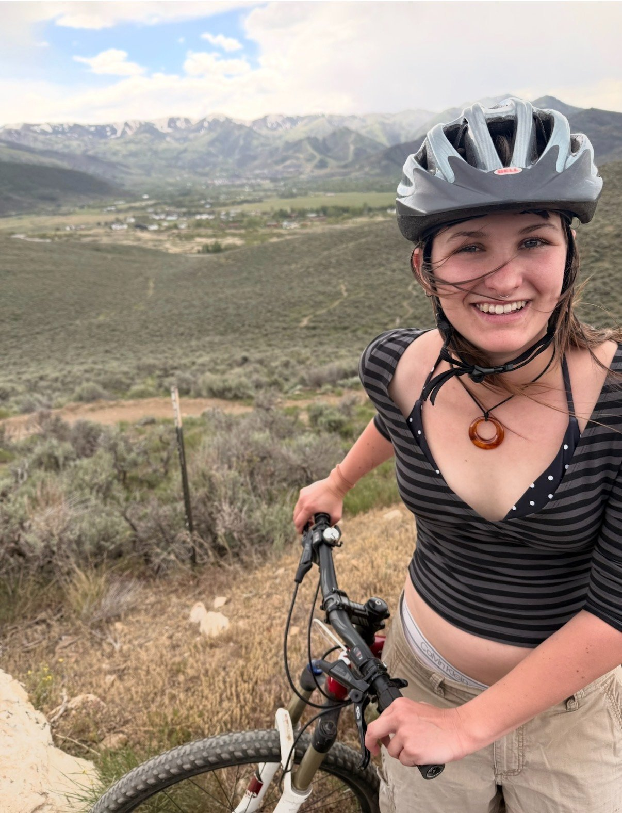
A recent graduate of the University of Washington with a passion for both our natural and built environments!
Listen NowI love learning about ecology, trees, fire, pathogens, wildlife, and more! Let me know if you know about stuff because I wanna know about it too.
My name is Abbey Cobleigh, and I'm a recent graduate of the University of Washington with a Bachelor of Science in Environmental Science & Terrestrial Resource Management and a Bachelor of Arts in Community, Environment & Planning. I grew up in Park City, Utah, and have always had a great interest in both our natural and built environment. I love biking, hiking, playing guitar, reading, and learning!
I'm currently interning for the Seattle Department of Transportation, where my job is to assist in the design, implementation, outreach, and surveying of the Delridge Native Forest Garden — a restoration project in Delridge, Seattle.
I'm excited to start my career and continue to develop skills in community engagement, research, and education!
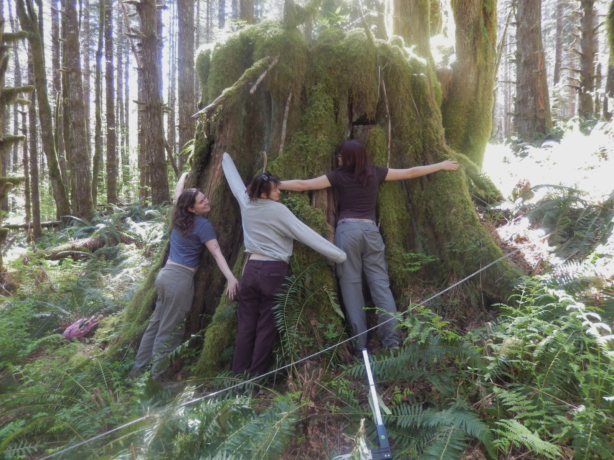
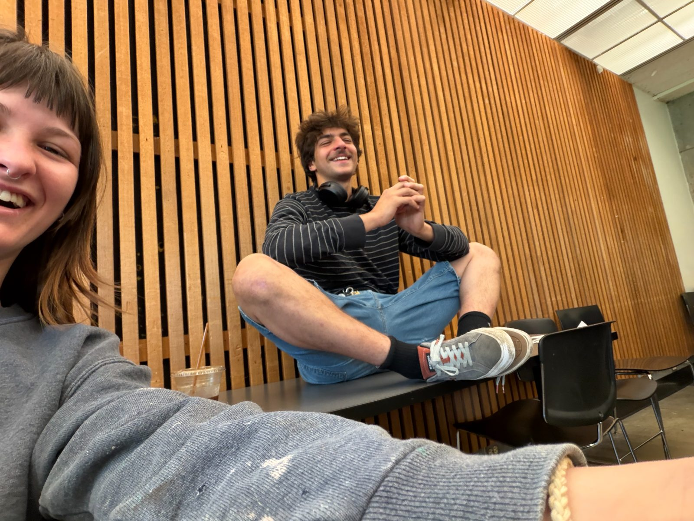
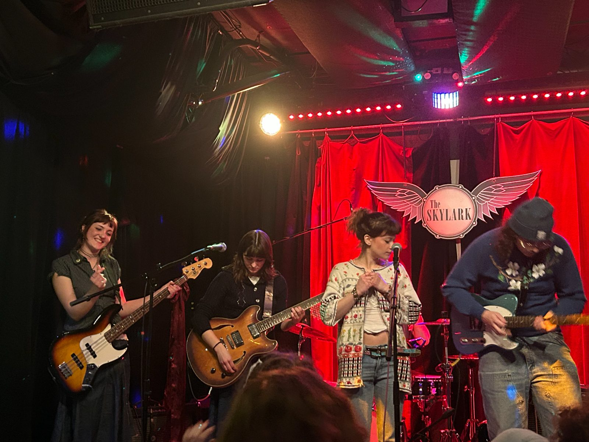
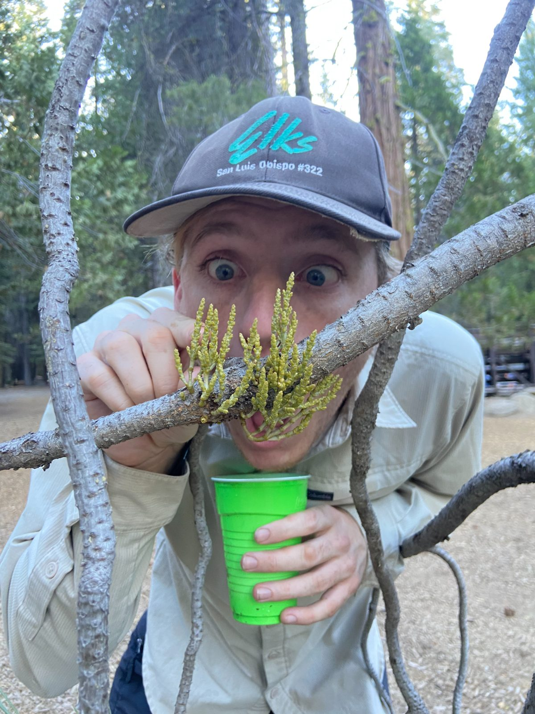
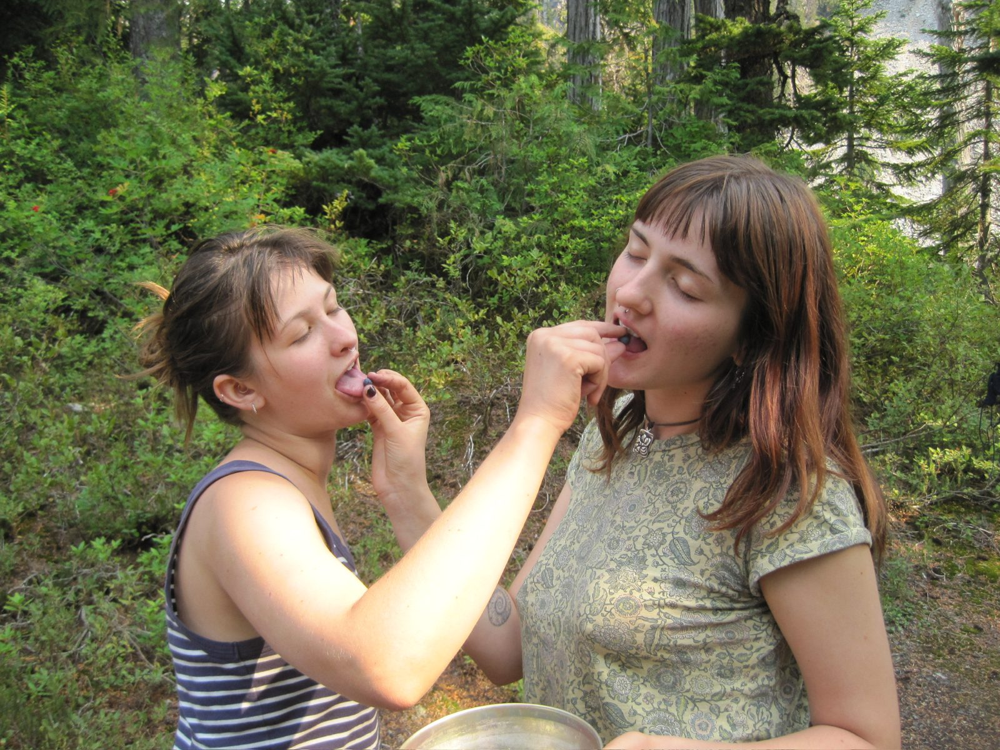
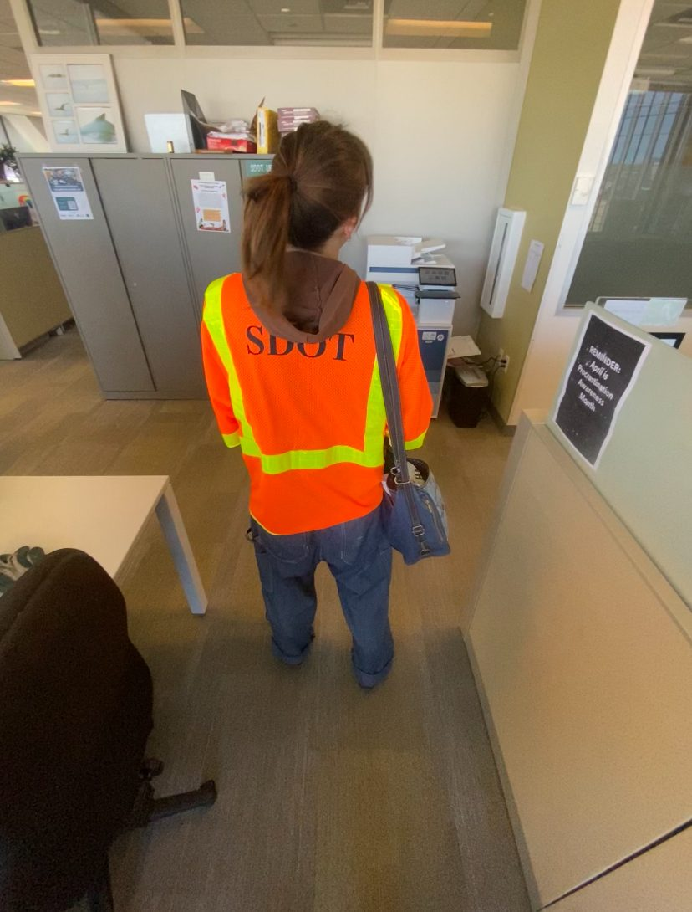
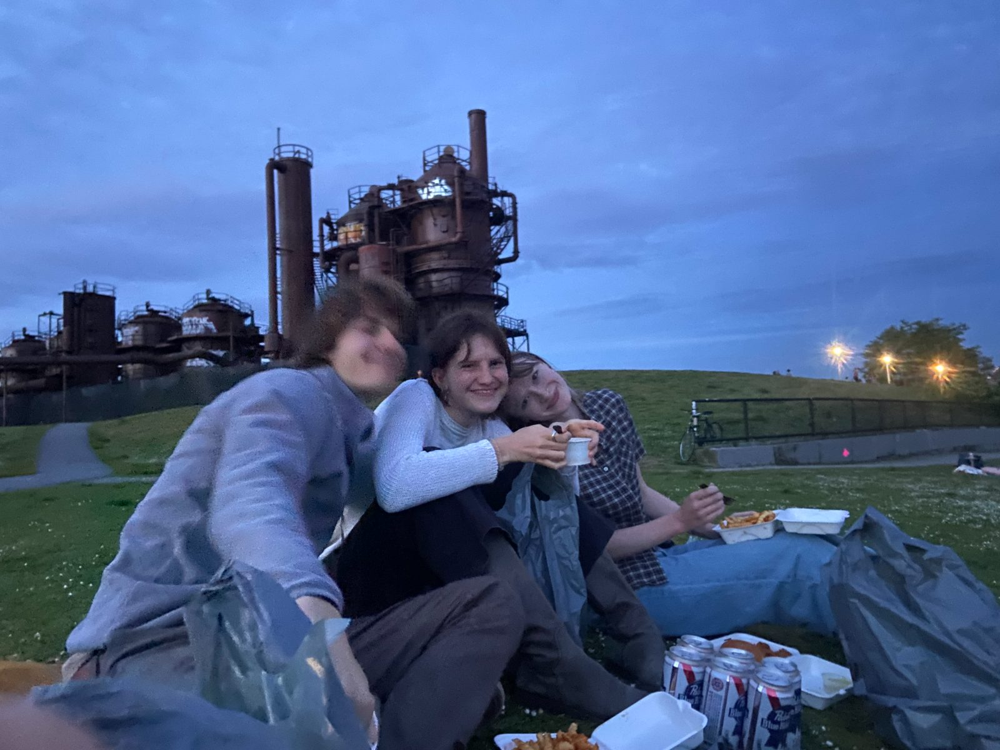
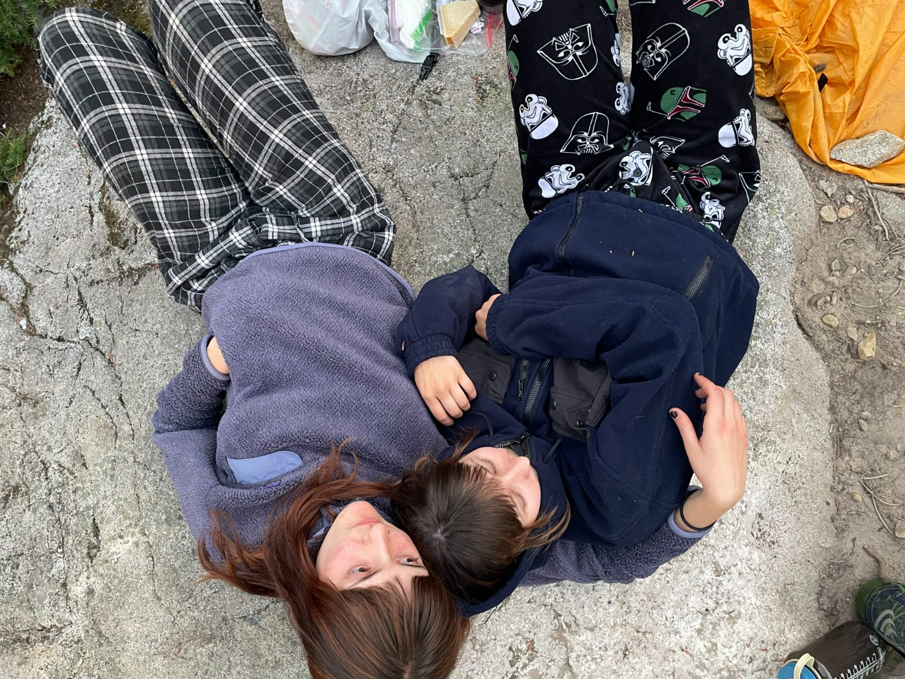
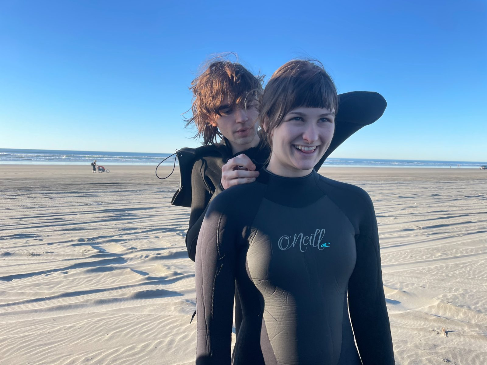
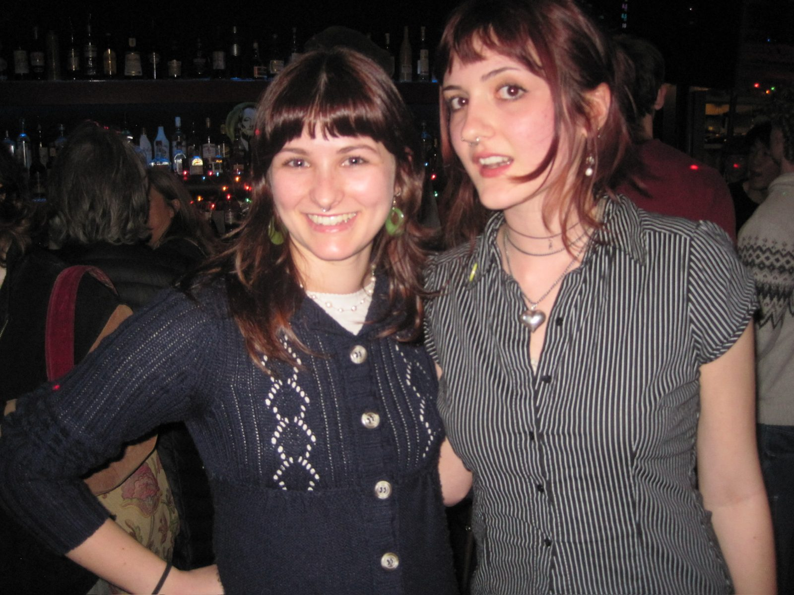